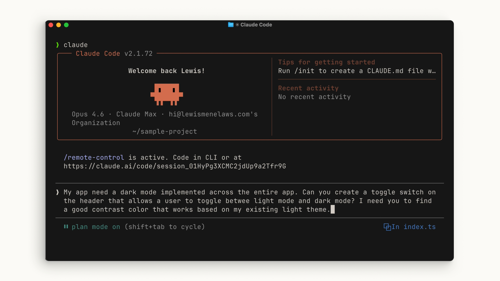

まず、普通に話しかける
出だしは拍子抜けするほど素っ気ない。Claude Code には、他の AI アシスタントに話しかけるのと同じように話しかければいい。特別な構文も、決まった型もない。
プロンプトを入力するときに考慮できるのが、承認モードとプランモード。どちらも「あなたを守り、同時に作業を楽にする」ためのものだ。
自動承認 vs 手動
Claude が提案するすべてのファイル変更を自動承認するか、毎回明示的な許可を求めさせるかを選べる。Shift + Tab を押すと2つのモードを循環する。
どちらが正しいというわけではない。自分が快適に感じる方を選べばいい。編集は自動でも、コマンドの実行だけは必ず止まる、という線引きがデフォルトで引かれているのがポイント。

accept edits on (shift+tab to cycle) が自動承認モードの表示。プランモード
同じ Shift + Tab のメニューの中にプランモードがある。やることはこうだ。
-
プロンプトを受け取る
やりたいことを普通に書く。ここまでは同じ。
-
読み取り専用ツールでコードベースを分析する
提案された実装について調査する。ファイルは一切編集されない。
-
不明点を質問してくる
はっきりさせたい項目について、途中で確認の質問が入る。
-
実行可能な詳細プランを返す
そのまま実行に移せる粒度の、長く詳細な計画が返ってくる。
向いている用途は複雑な変更の計画と安全なコードレビュー。多くの場合、Claude に頼むのは機能に向けた複数ステップの実装であり、まさにそこでプランモードが力を発揮する。

plan mode on (shift+tab to cycle)。この表示が出るまで Shift+Tab を押す。例：ダークモードトグルの追加
ここから実演。ダークモードのトグルがほしいアプリがある、という設定だ。手順は3つ。
- プロジェクトのルートで claude を実行
- Shift+Tab を数回押してプランモードへ
- プロンプトを書く
My app needs a dark mode implemented across the entire app. Can you create a toggle switch on the header that allows a user to toggle between light mode and dark mode? I need you to find a good contrast color that works based on my existing light theme.
アプリ全体にダークモードを実装したい。ヘッダーに、ライトモードとダークモードを切り替えるトグルスイッチを作ってほしい。既存のライトテーマに合う、コントラストの良い色を見つけてほしい。
この短いプロンプトに、次のレッスン以降で繰り返し出てくる要素がすでに3つ入っている。
範囲を明示している
「アプリ全体に（across the entire app）」——どこまで手を入れるかが最初に決まっている。
成果物が具体的
「ヘッダーのトグルスイッチ」——何ができたら終わりかが目に見える形で書かれている。
判断基準を渡している
「既存のライトテーマに合うコントラストの良い色」——色の選び方という、判断が必要な部分の基準を先に与えている。

plan mode on に注目。あとは Claude にプランを立てさせる。プランを確認して問題なければ承認し、各ステップで承認を求めさせる。最後には、Claude が何を行い、どのようにその結論に至ったのかを正確に確認できる。
まとめ
プロンプトはできるだけ具体的に。すべてのステップで状況を把握しておきたいなら、そうできる。
そしてプランモードを使えば、実際にコードを実行する前に、達成したいことの詳細を Claude に掘り下げてもらえる。
この「まず計画、それからコード」という順番は、次の 04 探索 → 計画 → コード → コミット でワークフロー全体に拡張される。
原文トランスクリプト（英語・全文）
YouTube の自動生成字幕から取得したもの。実演部分のプロンプト読み上げも含む。
You talk to Claude Code like you would talk to any AI assistant. When entering your prompt, here are some things that you can consider that can both protect and make things easier for you. You can choose whether Claude auto
accepts every file change it suggests or require it to ask you for explicit permission each time. With shift plus tab, you can cycle between both modes. In auto accept mode, it will automatically approve an edit or
creation of a file, but ask your permission to run commands. There isn't a right or wrong way. It's just whatever you feel the most comfortable with. Within this shift tab menu is the plan mode.
Plan mode takes your prompt and uses read-only tools to analyze your code base and do research on your suggested implementation. It will also ask you questions on items that it wants clarification on.
It then returns to you a long detailed plan that it can execute on in more detail. Plan mode works great for planning complex changes or doing a safe code review. A lot of the time you're asking Claude to do multi-step
implementations towards a feature and this is exactly what plan mode excels at. So, why don't we give it a try? I have an application here that desperately needs a dark mode toggle. So, I'm going to use
Claude Code to implement this for me. So, I'm in the root directory of my project and I'm going to hit the shift tab a couple times to go into plan mode. Then, let's write out the prompt. My app
needs a dark mode implemented across the entire app. Can you create a toggle switch on the header that allows user to toggle between light mode and dark mode? I need you to find a good contrast color
that works based on my existing light theme. And let's let Claude plan this out. And after reviewing, I think it looks pretty good. At the end of all this, we can see explicitly what Claude did and how it
came to its conclusion. And the dark mode is looking pretty good. Awesome. >> [music] >> When using Claude Code, try to be as descriptive as possible with your prompt. If you want to stay in the loop
at every step, you can do that. Use plan mode to let Claude get a little bit more in the nitty-gritty with what you want to achieve before executing on that plan.